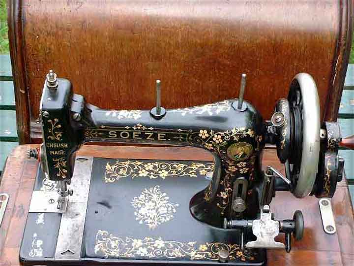
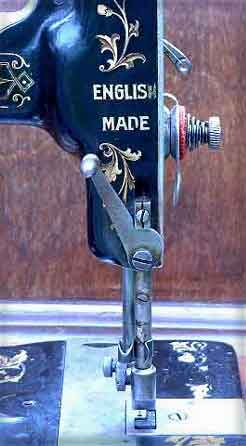
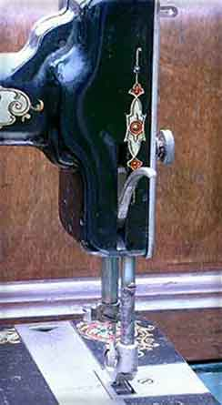
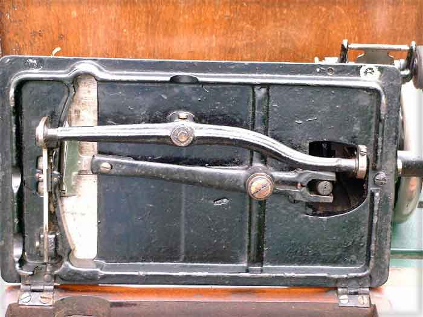
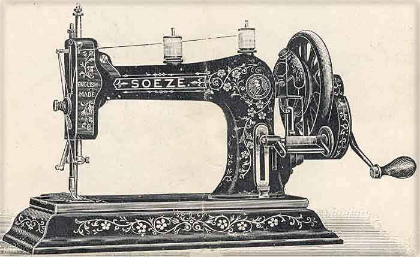

The Bradbury Company produced machines in the town of Oldham, England during the second half of the 19th Century and the beginning of the 20th. The company ceased production some time in the 1920's.
Bradbury held a competition to name their new machine, the results of which were published in June 1898.
Mrs Clements of 21 Brown Street, Burnley won one of the new hand machines with cover, for suggesting the name 'Soeze'.
"So easy to learn; so easy to work; so easy to treadle; and so easy to buy."
Several American companies used variations on this name, either before or after Bradbury's machine. Davis and New Home used So-Ezy, Mason and White had a Sew Easy, National had a Soesy and Batchelor & Stenson's toy was called Soezy.
It was reported in September 1898 that the first batch of Soezes had been produced and in October they were on display in Bradbury's main London depot.
This is a comparison of five Bradbury vibrating shuttle-type machines which show some interesting developmental steps.
The five machines discussed are:
1 |
An early
Bradbury Soeze (with iron based version) |
Comparison of Presser
Foot Levers |
|
2 |
|
3 |
|
4 |
A later Bradbury
VS with floral decals |
5 |
|
Comparison of Rear
Pillars |
|
Comparison of Machine
Beds |
The original model featured a leaf tension on top of the arm with one or two spool pins, having an American look about it.
The throat plate was originally round.
The following picture shows a second distinct version of the Soeze.

Note the position of the thread guide on the belt guard by the balance wheel, the flat platforms under the spool pins, the position of the Duke of Wellington logo, the moulding to the right of the slide plates. The serial number is to the rear of the machine.
The machine takes top clamping attachments and has an American style of presser foot lifter. The first two versions of Soeze were screwed down to the base.
The presser foot lever of the early Soeze is compared to that of the later version:

The underneath of the machine is very simple with a long shuttle arm giving a shallow sweep to the shuttle arc.

Even as late as 1905, this model was available mounted on an ornamental iron base.

A later Bradbury Soeze is shown below. Note the profile and shape of the arm.
As can be seen from the view of the underside below, the Soeze uses a shuttle arm with its pivot point set far to the right, giving the shuttle a shallow sweeping arc, rather like that used on the Jones CS machines.
As can be seen from comparing the pictures of the early Family VS below with those of the Soeze above, the bed and the sewing mechanism with the shallow sweeping shuttle are virtually identical.
Changes have been made to the arm of the Family VS however, with an obviously different casting being used which has a front inspection plate, and a change in the position of the upper tension control from the faceplate on the Soeze, to the front of the sewing head on the Family VS.
This machine takes side clamping feet, rather than the top clamping feet of the Soeze.
The underside of the Family VS is virtually the same as that of the Soeze.
The late Family VS has further changes to the arm casting, with a much broader pillar, and a change in the position of the stitch length regulator slide. The design of the bobbin winder is also different and the serial number has been moved from the rear of the pillar to the front.
Interestingly this later machine has a flat platform under the right-hand spool pin, a feature usually associated with earlier machines when looking at Singers.
The biggest change can be seen in the shuttle mechanism below the bed however. The shuttle arm has been changed to one with a very short arm, resulting in the shuttle following a sharply curving arc, somewhat like that of the Singer VS3.
The arm and topside of the bed casting is identical to the preceding Family VS, except that there is a change to the shape of the serial number area.
Again, the underside of this machine is identical to the preceding Family VS except that a longer lug has been cast in (lower right of picture), to enable the machine to stand upright without its wooden base. The preceding VS cannot stand upright without support.
Note the different shape of the rear inspection plate on the later Family VS's - Rear to Front: Soeze, early Family VS, late Family VS (floral decals), late Family VS (green decals)
Note the much wider slide plates and the change of position of the serial number on the late Family VS's - Left to Right: Soeze, early Family VS, Late Family VS (floral decals), Late Family VS (green decals)